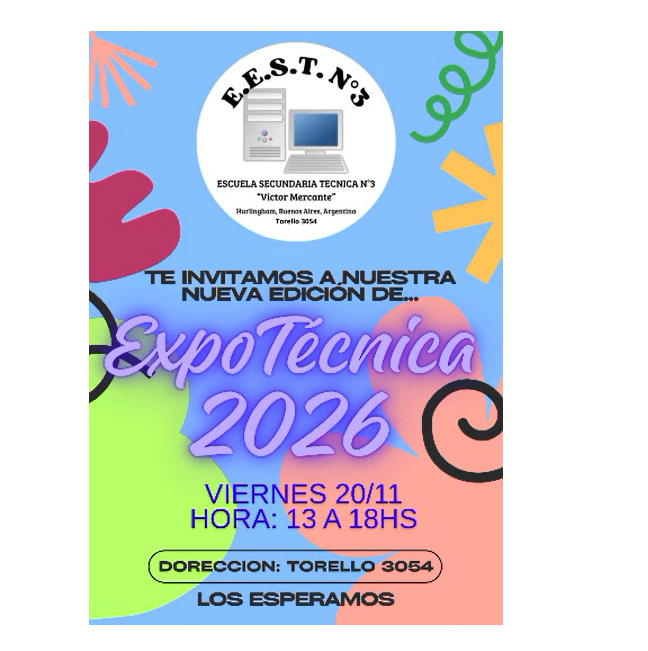
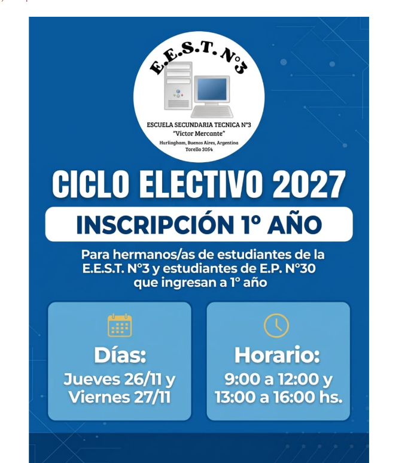

ExpoTécnica 2026
La E.E.S.T. N.º 3 Víctor Mercante invita a las familias y a la comunidad a una nueva edición de ExpoTécnica.
- Fecha
- Horario
- 13:00 a 18:00
- Sede
- Torello 3054, Hurlingham

"No solo solucionamos problemas, creamos el futuro digital."
Comunidad educativa
La E.E.S.T. N.º 3 Víctor Mercante invita a las familias y a la comunidad a una nueva edición de ExpoTécnica.

Para hermanos y hermanas de estudiantes de la E.E.S.T. N.º 3 y estudiantes de la E.P. N.º 30 que ingresan a 1.º año.
y , de 9:00 a 12:00 y de 13:00 a 16:00.

, de 9:00 a 12:00 y de 13:00 a 16:00.
Se entregarán números por orden de llegada, según la cantidad de vacantes disponibles.
Diciembre de 2026, de 9:00 a 12:00 y de 13:00 a 16:00.
En biblioteca se debe comprar la planilla completa, las autorizaciones de imagen y de retiro, y el cuaderno de comunicados con folio oficio.
El Técnico en Informática Profesional y Personal estará capacitado para asistir al usuario de productos o servicios informáticos, brindando servicios de instalación, capacitación, sistematización, mantenimiento primario, resolución de problemas derivados de la operatoria, y apoyo a la contratación de productos o servicios informáticos.


Mantener componentes de equipos de computación y comunicaciones, programas y sistemas.
| 1 | Diagnosticar fallas y problemas encontrados por los usuarios. |
| 2 | Reemplazar componentes defectuosos de equipos de computación y redes. |
| 3 | Reinstalar componentes de programas y sistemas. |
| 4 | Configurar componentes de equipos y redes, programas y sistemas. |
| 5 | Programar y efectuar mantenimiento preventivo de componentes de equipos y redes, programas y sistemas. |
La tecnicatura se estructura en 3 niveles formativos: Formación General, Formación Científico Tecnológica y Formación Técnico Específica.
| CUARTO AÑO | QUINTO AÑO | SEXTO AÑO | SÉPTIMO AÑO | ||||
|---|---|---|---|---|---|---|---|
| Materia | CHT | Materia | CHT | Materia | CHT | Materia | CHT |
| FORMACIÓN GENERAL | |||||||
| Literatura | 72 | Literatura | 72 | Literatura | 72 | Prácticas Profesionalizantes | 200 |
| Inglés | 72 | Inglés | 72 | Inglés | 72 | ||
| Educación Física | 72 | Educación Física | 72 | Educación Física | 72 | ||
| Salud y Adolescencia | 72 | Política y Ciudadanía | 72 | Filosofía | 72 | ||
| Historia | 72 | Historia | 72 | Arte | 72 | ||
| Geografía | 72 | Geografía | 72 | ||||
| FORMACIÓN CIENTÍFICO TECNOLÓGICA | |||||||
| Matemática Ciclo Superior | 144 | Análisis Matemático | 144 | Matemática Aplicada | 72 | Emprendimientos Productivos | 72 |
| Física | 108 | Sistemas Digitales | 108 | Sistemas Digitales | 108 | Evaluación de Proyectos | 72 |
| Química | 72 | Teleinformática | 144 | Investigación Operativa | 144 | Modelos y Sistemas | 72 |
| FORMACIÓN TÉCNICO ESPECÍFICA | |||||||
| Lab. de Programación | 72 | Lab. de Programación | 72 | Lab. de Programación | 72 | Proyecto, Diseño e Implementación | 144 |
| Lab. de Hardware | 144 | Lab. de Hardware | 144 | Lab. de Hardware | 144 | Instalación, Mantenimiento y Reparación | 144 |
| Lab. de Sistemas Operativos | 144 | Lab. de Sistemas Operativos | 144 | Lab. de Sistemas Operativos | 144 | Instalación, Mantenimiento y Reparación de Redes | 144 |
| Lab. de Aplicaciones | 72 | Lab. de Aplicaciones | 72 | Lab. de Aplicaciones | 72 | ||
| Total hs. semanal: 35 | Total hs. semanal: 35 | Total hs. semanal: 35 | Total hs. semanal (sin PP): 21 | ||||
Nuestro equipo de conducción, junto a un amplio cuerpo de profesionales, afronta los desafíos de una industria en constante cambio.
Directora
Vicedirector
Vicedirectora
Jefa de Área
Email: eest3hurlingham@abc.gob.ar
Dirección: José de Andonaegui 2295 / Torello 3054 — B1686 Hurlingham, Buenos Aires